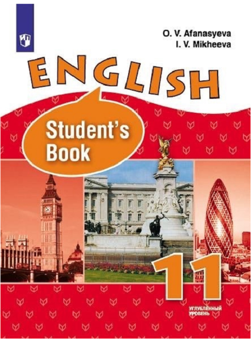
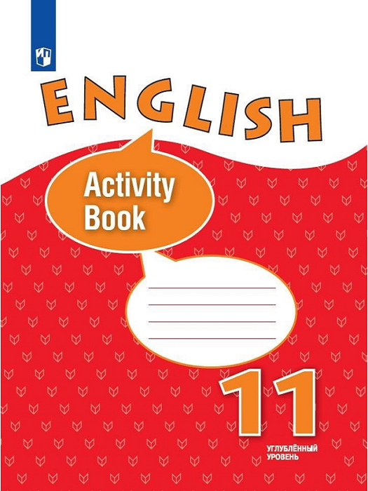
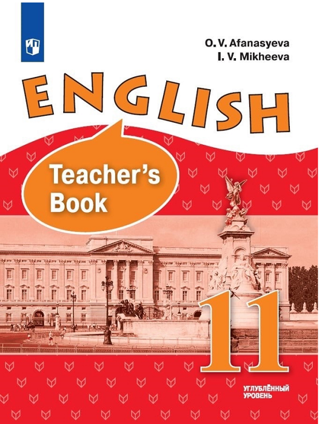

Многие учителя сталкиваются с проблемами во время работы с УМК “Английский язык 11 для школ с углублённым изучением английского языка”. Причинами этих проблем могут быть:
Данный сайт создан как рекомендации к данному УМК и содержит в себе некоторое количество упражнений для дополнительной работы по грамматическим темам. Эти упражнения помогут ученикам:
Мы надеемся, что данный сайт будет полезным ресурсом для учеников английского языка, работающих с УМК “Английский язык 11 для школ с углублённым изучением английского языка”.
Main topics: Types of Sentences, Relative Clauses, Members of the Sentences, Modal Verbs.
  Анна Гаспарян, Иван Светлаков и Виталия Михайлова.